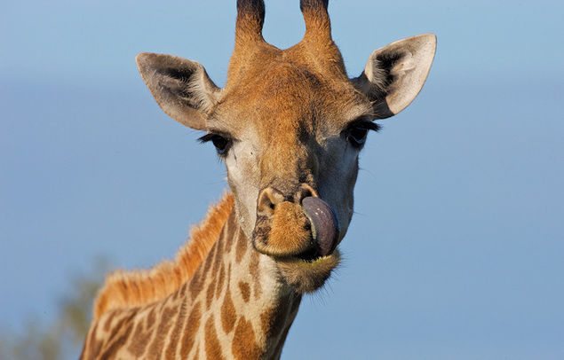

MY PROJECTS
The projects that I have been working on for the whole of week one are as follows:
1. My First Directory
This was my very first complete website with HTML/CSS.
Click here to access my first website!

2. Girrafe Styling
This is my website with sectional styling.
Click here to access the website!

3. Private Island Resort
This is my website that I styled after my partner typed down the HTML file.
Click here to access the website!

About Me
Education:
I spent four of my years in Nova Pioneer where I attained my high school education and gradueated with and A- grade.
Nova Pionner offered classes of HTML/CSS and Game Creation during club-time and having engaged in them for over three years, it turned into my passion hence I am pursuing programming in Moringa School!
Hobbies and Passion:
I have a strong passion for basketball and I play it as often as I can when I get the chance and the court. When I am not balling I am either riding my bike or the often going for PARTIES!!!